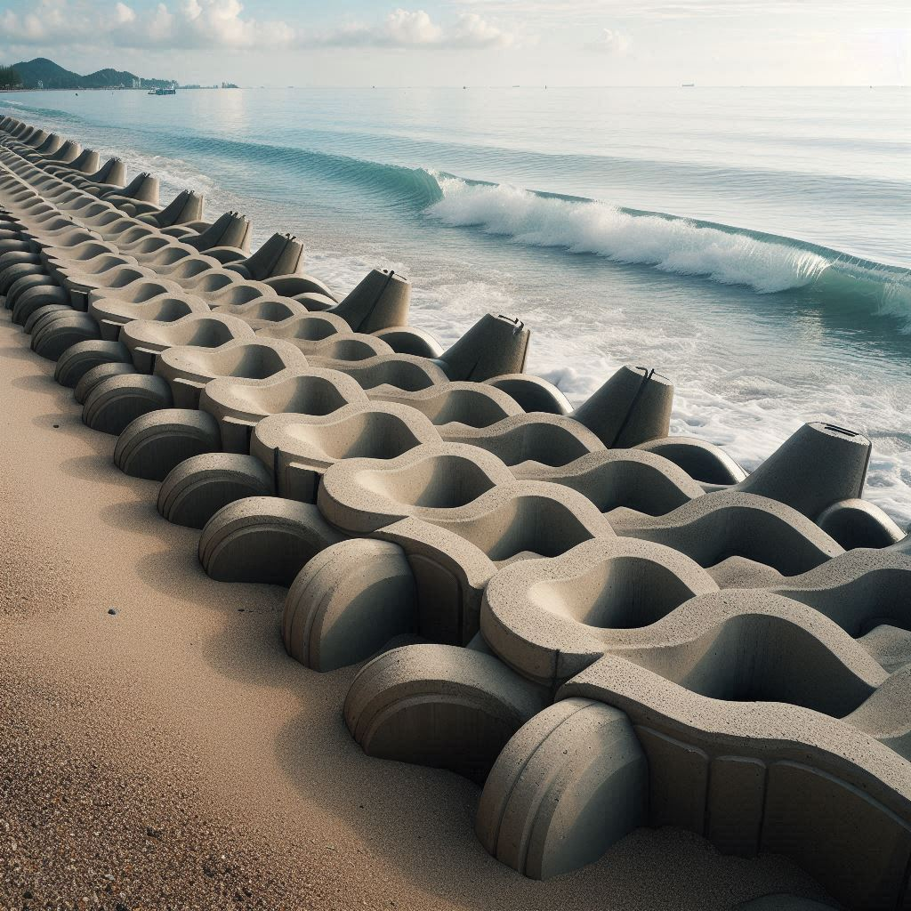
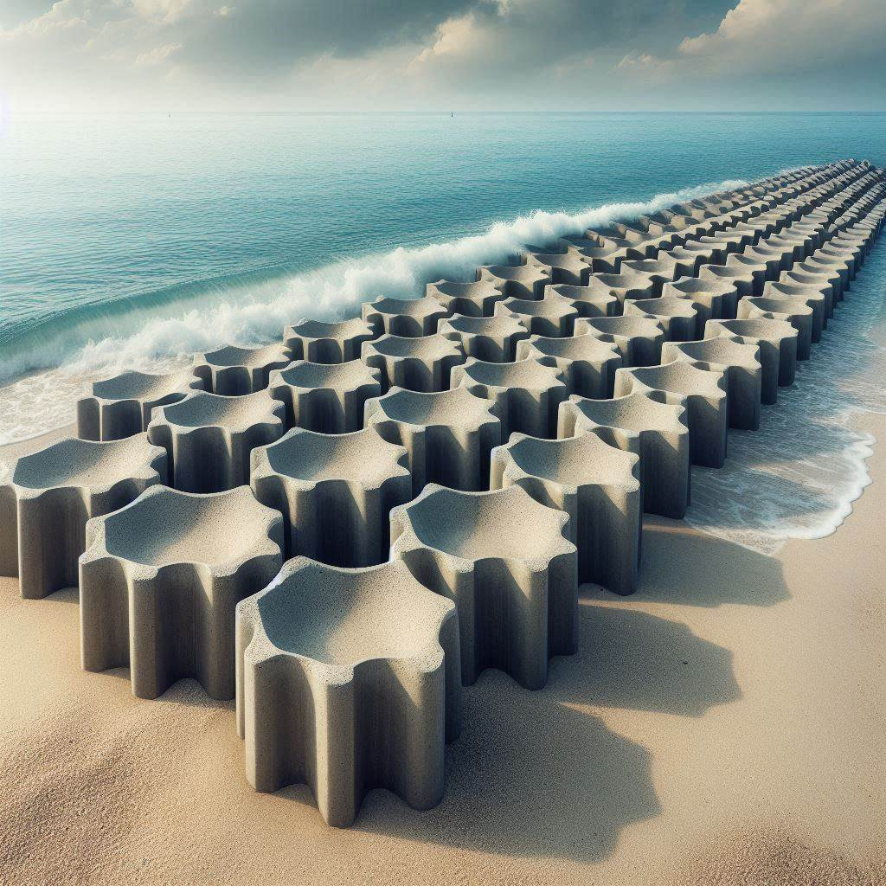
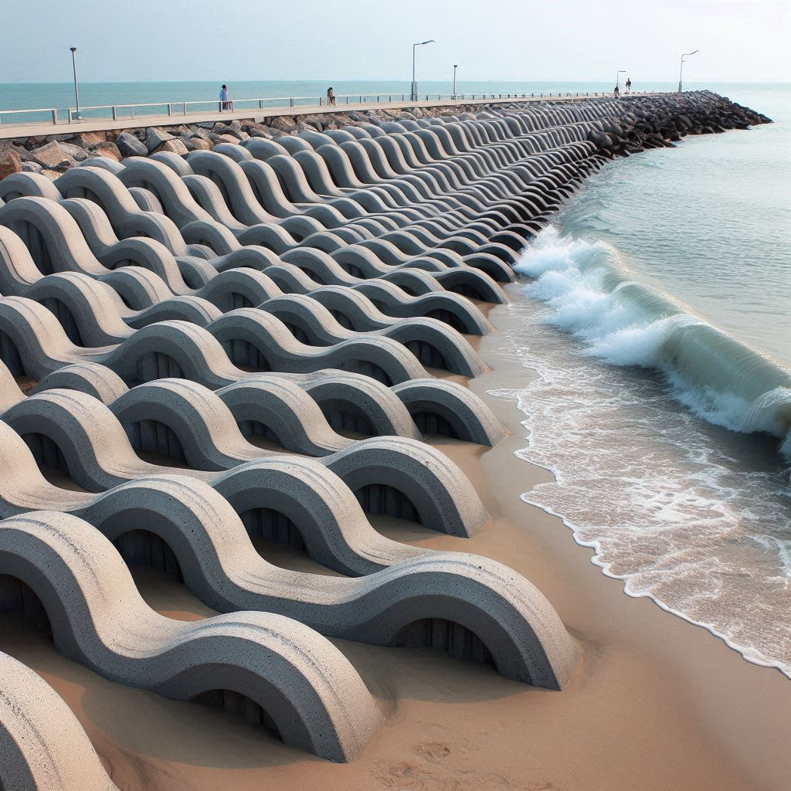

|  |  |  | |
| 港口緣起 | 消波塊 | 施作方式 | 研習心得 |
設計和規劃：首先，需要進行消波塊的設計和規劃。這包括確定消波塊的尺寸、形狀和材料。
選擇材料：水泥是常見的消波塊材料之一。你可以使用預製的混凝土結構，或者自己製作混凝土消波塊。
選擇適合的水泥配方，以確保耐久性和抗腐蝕性。
製作模具：根據設計，製作消波塊的模具。模具可以是木製、金屬或其他材料。 混凝土灌注：將混凝土倒入模具中，確保填滿並均勻分佈。你可以添加鋼筋或其他增強材料，以增加強度。
固化和拆除模具：讓混凝土固化，通常需要幾天的時間。然後拆除模具，讓消波塊完全固化。
安裝：將消波塊運送到目的地，然後按照設計的位置進行安裝。通常，消波塊會被放置在水下，以吸收波浪的能量。